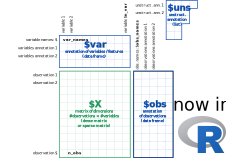

anndata is a commonly used Python package for keeping track of data and learned annotations, and can be used to read from and write to the h5ad file format. It is also the main data format used in the scanpy python package (Wolf, Angerer, and Theis 2018).

anndata
However, using scanpy/anndata in R can be a major hassle. When trying to read an h5ad file, R users could approach this problem in one of two ways. A) You could read in the file manually (since it’s an H5 file), but this involves a lot of manual work and a lot of understanding on how the h5ad and H5 file formats work (also, expect major headaches from cryptic hdf5r bugs). Or B) interact with scanpy and anndata through reticulate, but run into issues converting some of the python objects into R.
We recently published anndata on CRAN, which is an R wrapper for the Python package – with some syntax sprinkled on top to make R users feel more at home.
The R anndata is still under active development at github.com/rcannood/anndata. If you encounter any issues, feel free to post an issue on GitHub!
Installation
Installing anndata is not particularly hard. You do need R and Python to be installed. If you don’t have a working installation of Python, you can let reticulate install Miniconda.
# install the R anndata packageinstall.packages("anndata")# skip this if you wish to use the local python installationreticulate::install_miniconda()# skip this if anndata is already installedanndata::install_anndata()
Getting started
The API of anndata is very similar to its Python counterpart. Check out ?anndata for a full list of the functions provided by this package.
AnnData stores a data matrix X together with annotations of observations obs (obsm, obsp), variables var (varm, varp), and unstructured annotations uns.
Here is an example of how to create an AnnData object with 2 observations and 3 variables.
You can use any of the regular R indexing methods to subset the AnnData object. This will result in a ‘View’ of the underlying data without needing to store the same data twice.
In some cases, this package may still act more like a Python package rather than an R package. Some more helper functions and helper classes need to be defined in order to fully encapsulate AnnData() objects. Examples are:
ad$chunked_X(1)
<generator object AnnData.chunked_X at 0x7f8d3424eac0>